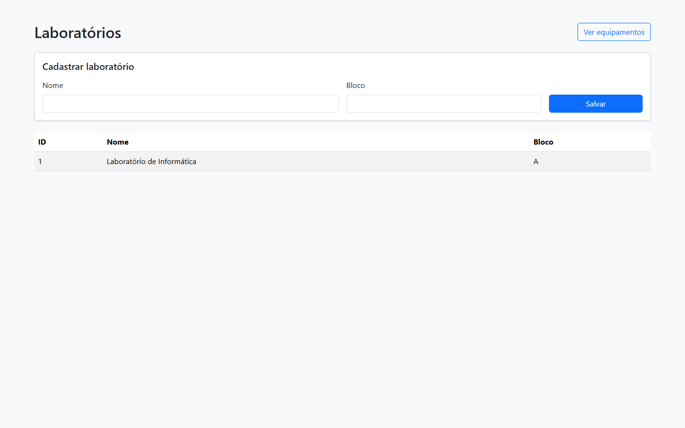
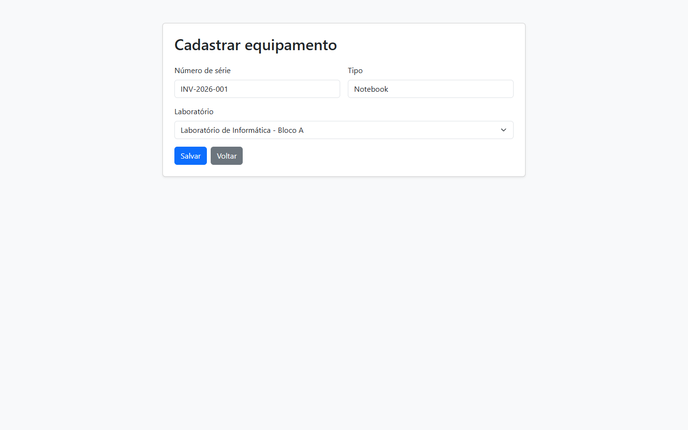
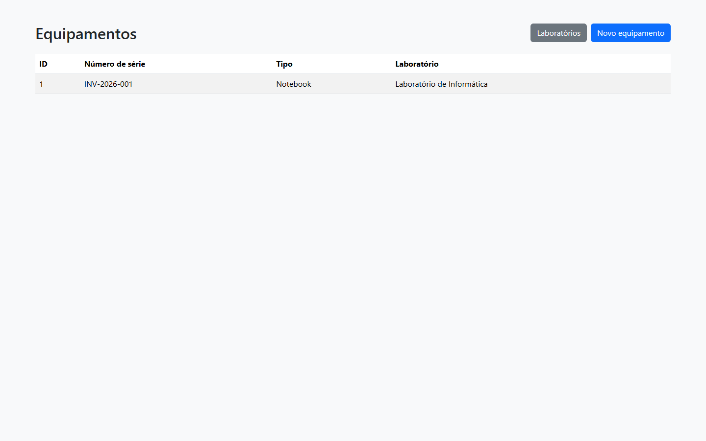

01
Cadastrar laboratórios
Registra o nome e o bloco de cada laboratório.
Projeto Java Web
O Inventory-IT organiza o cadastro dos laboratórios e dos equipamentos de uma instituição, mantendo cada item associado ao seu local de uso.
Objetivo
Desenvolvido com Java e Jakarta EE, o sistema reúne formulários, processamento de requisições e persistência de dados em um fluxo completo. Laboratórios são registrados e disponibilizados para seleção durante o cadastro dos equipamentos.
Funcionalidades
Registra o nome e o bloco de cada laboratório.
Apresenta os ambientes cadastrados para consulta.
Registra tipo, número de série e laboratório.
Exibe cada equipamento com seu laboratório associado.
Arquitetura
A interface envia as requisições aos Servlets, que utilizam os DAOs para acessar as entidades persistidas com JPA/Hibernate no banco H2.
Tecnologias
Demonstração
Algumas das principais telas do Inventory-IT durante sua execução.

Cadastro e listagem dos laboratórios registrados no sistema.

Cadastro de equipamento com seleção do laboratório responsável.

Listagem dos equipamentos com seus respectivos laboratórios.